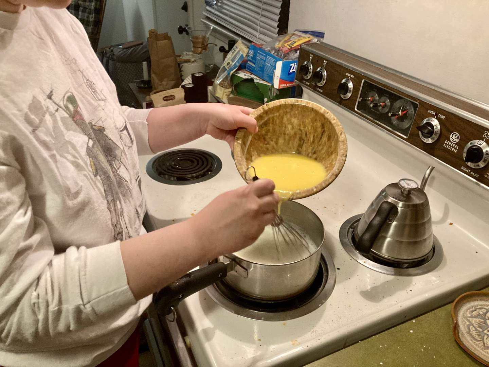
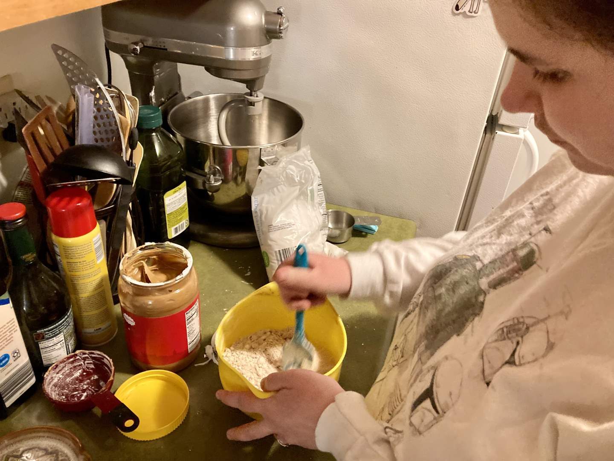
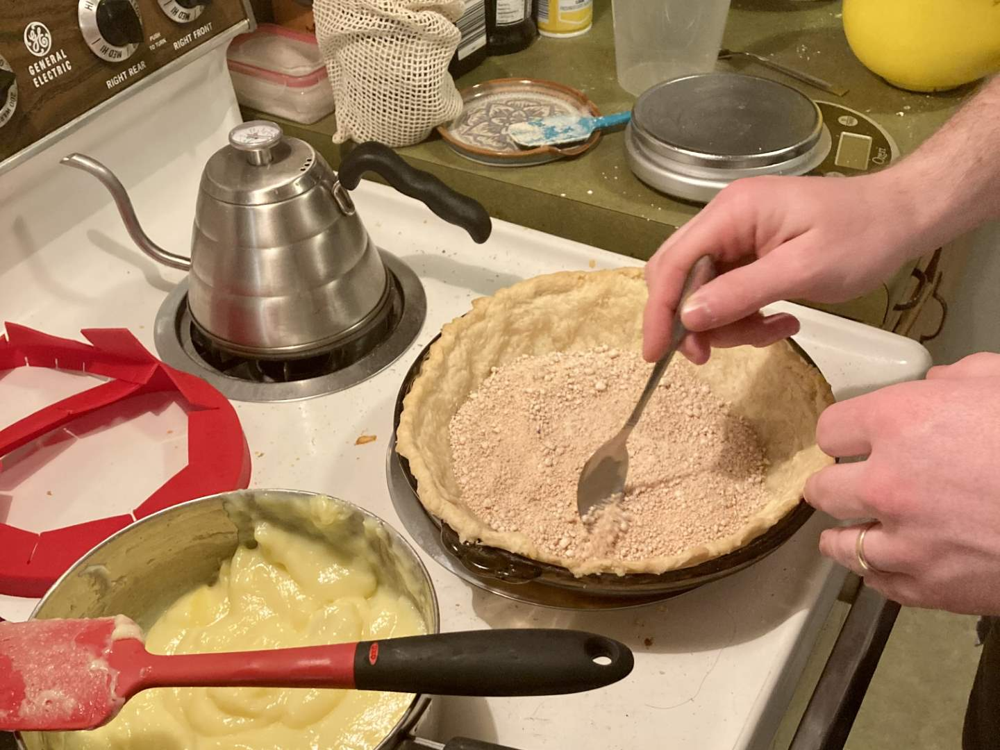
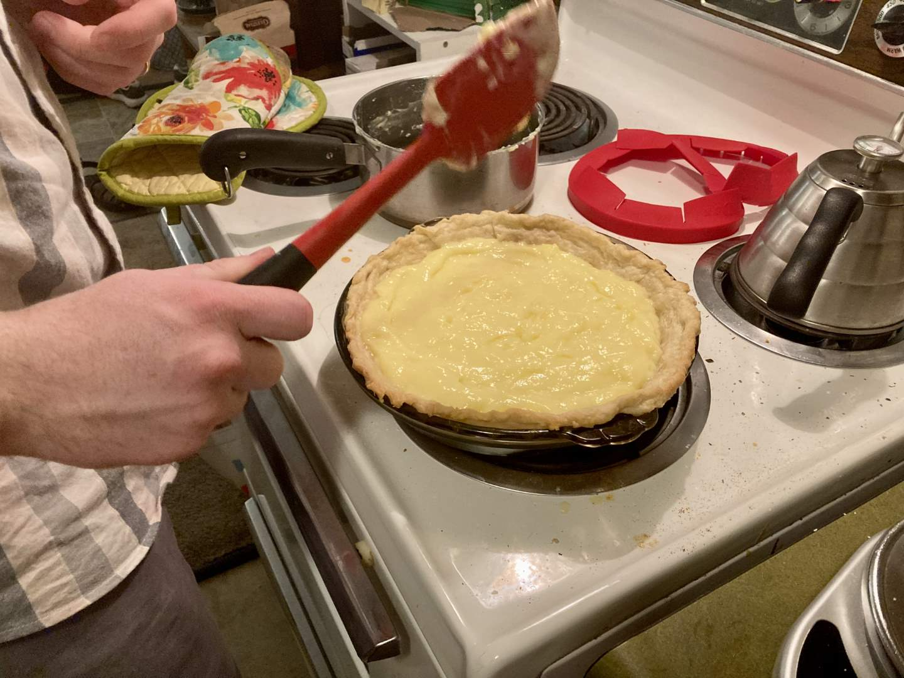
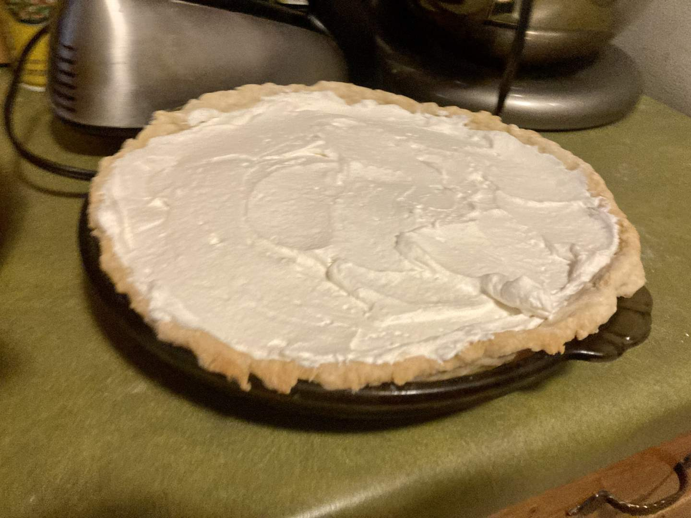
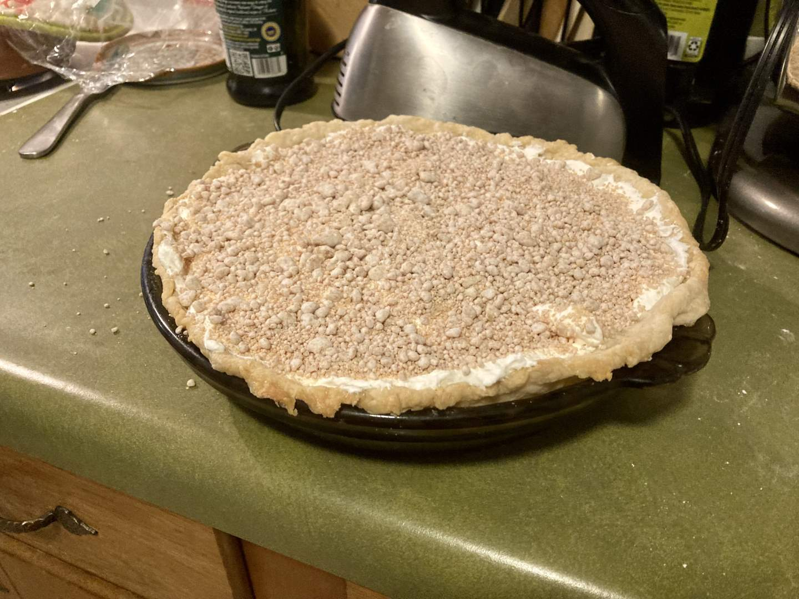
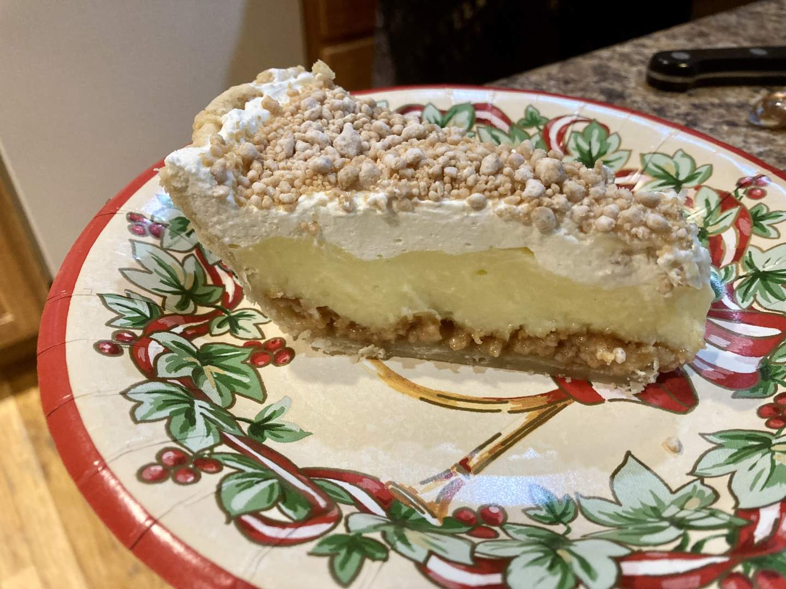

Pie 31: Peanut Butter Cream
2024-01-27Filling recipe is from Me, Myself, and Pie, p. 51
Crust recipe from Tastes Better From Scatch.
Taste:
Difficulty:
Vibes:
Suggested pairing: fruit, cheese, cornbread, chili, & watching the KC Chiefs win the AFC title
Could this be the best pie we have yet made? My mother and grandmother think so. Neither has tasted even half of our previous recipes, but Katie Beth and I also believe it to be one of--perhaps even the singular--best.
My maternal grandmother’s birthday was last week and she asked us to make a cream pie with whipped cream to celebrate. Katie Beth flipped through the cream pie section of Me, Myself, and Pie and settled on this gooberlicious pie. I prepared the crust according to our favorite recipe while she cooked the egg-heavy filling.
The peanut element of this pie is not in the creamy filling but in two layers of crumbs, one between crust and filling and the other sprinkled over the whipped cream. Peanut butter and powdered sugar were the only two ingredients in this crumb mixture.
After I blind-baked the crust (usually required for custard and cream pies) we spooned the creamy yellow filling into the shell. All this we did the night before her birthday, planning to whip the cream day-of for maximum fluff and freshness.
 After previous experiences with mushy cream whipped to only the soft-peak stage, I decided to move far into the stiff-peak stage. To travel far along this path is perilous, for beyond the stiff stage Butter lies in wait, and once heavy cream is beaten into butyraceousness there is no return to the happy and light joys of foam. Avoiding this hideous error, I ensured that the whipped cream would cut smoothly and produce a shapely slice.
When we finally cut and presented the pie to my relatives, it was pronounced highly delicious. We would strongly recommend this recipe to anyone willing to check out the book from their local library.
 